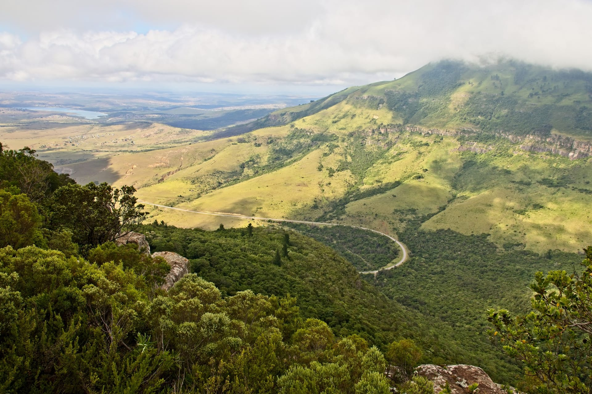

Salento es el pueblo más colorido del Quindío, famoso por sus balcones tradicionales y cercanía al Valle de Cocora. Visitamos Salento diariamente con planes desde $425.000 COP que incluyen transporte, coffee tours, caminatas por el valle de las palmas de cera, alojamiento en finca hoteles y guías locales expertos en cultura paisa.
Descubre el pueblo patrimonio más bello del Eje Cafetero. Balcones coloridos, miradores, artesanías y gastronomía tradicional. Tours completos con Quindío Travel RNT 18152.
Reserva hoy y viaja esta semana - Cupos limitados para temporada alta



Fundado en 1842, Salento es considerado uno de los pueblos más hermosos de Colombia, famoso por sus balcones coloridos, arquitectura tradicional y acceso al Valle de Cocora.
Las casas de Salento son famosas por sus balcones con colores vibrantes que crean un paisaje único. Cada año, los vecinos renuevan los colores manteniendo la tradición viva.
Construida en estilo neogótico, esta iglesia del siglo XIX es el centro religioso y cultural del pueblo, con su arquitectura impresionante.
Sube al mirador para disfrutar de vistas panorámicas del Valle de Cocora y todo el Quindío. El punto perfecto para fotos memorables.
Descubre la cultura cafetera a través de talleres de artesanía en guadua, cerámica y tejidos tradicionales con artesanos locales.
Nuestros planes turísticos incluyen Salento como parte de la experiencia completa del Eje Cafetero.
Camina por el Valle de Cocora y explora Salento en un día completo. Transporte, guía y almuerzo incluidos.
Explora dos pueblos patrimonio en un día. Arquitectura tradicional, artesanías y gastronomía local.
Experiencia completa de la cultura cafetera con visita a fincas y tour por Salento con catación de café.
Estos planes incluyen visitas a Salento como parte del itinerario completo del Eje Cafetero.
Experiencia Completa
$613.000 / Intermedio (sin transporte)
Valle de Cocora · Salento · Filandia · Parques · Alojamiento
Experiencia Definitiva
$880.000 / Intermedio (sin transporte)
TODOS los atractivos · Valle de Cocora · Salento · Termales · Pueblos
Salento está ubicado a 30 minutos de Armenia, capital del Quindío. Se puede llegar en Willys o transporte privado desde Armenia.
Todo el año es hermoso, pero los meses secos (enero-febrero y julio-agosto) son ideales para senderismo. El clima es agradable todo el año.
Ropa cómoda para caminar, calzado antideslizante, cámara, protector solar y chaqueta para las noches frescas en el Valle de Cocora.
Prueba el típico trucha asada, arepas quindianas, café del municipio y dulces tradicionales en los restaurantes locales.
Cotiza tu tour a Salento con Quindío Travel y recibe una respuesta en menos de 2 horas.